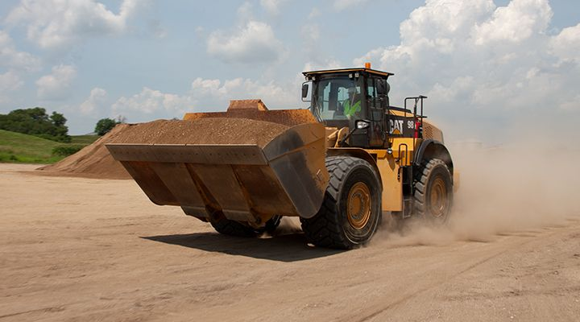
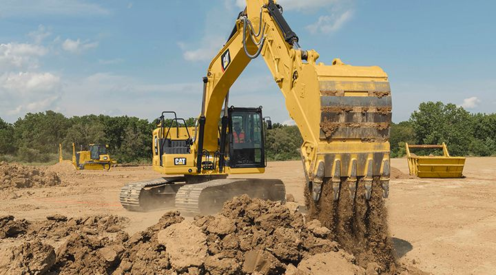
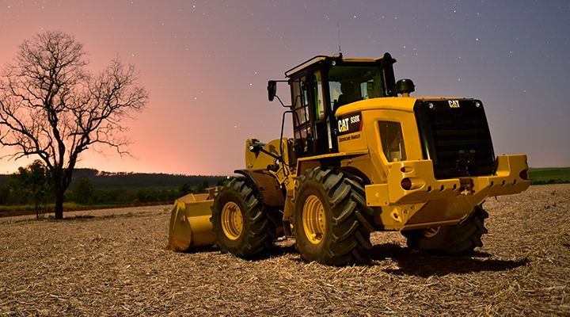
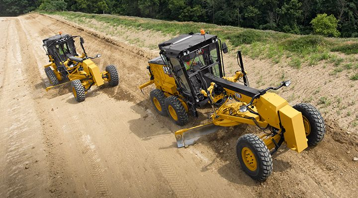

313D2 GC (2017)
Configurada para que funcione a una velocidad máxima de 1.650 rpm con una potencia de motor de 55 kW (74 hp), todo para consumir hasta un 15 % menos de combustible en comparación con la 313D2

Todos |

Excabadoras |

Cargadores |

Motoniveladoras |
Configurada para que funcione a una velocidad máxima de 1.650 rpm con una potencia de motor de 55 kW (74 hp), todo para consumir hasta un 15 % menos de combustible en comparación con la 313D2
El potente y eficiente motor mecánico Cat® C4.4 consume hasta un 14 % menos de combustible que el modelo que reemplaza, sin perder fuerza de levantamiento ni de excavación.
Un potente Motor C4.4 con control electrónico cumple con las normas de emisiones equivalentes a Tier 3 de la EPA de EE.UU., Stage IIIA de la Unión Europea y Stage III de China para uso fuera de carretera.
Altas cargas límite de equilibrio a giro pleno, fuerzas potentes de desprendimiento y mayor potencia del motor, el modelo 920K proporciona una solución equilibrada para todas las aplicaciones del cliente.
ara aplicaciones exigentes y demandantes con cañas de azúcar, el tren de fuerza especialmente diseñado del Manipulador de Cañas de Azúcar 938K incluye un eje de alto par junto con neumáticos de alta flotación para tareas agrícolas.
Experimente una eficiencia del combustible de tipo híbrido con un tren de fuerza hidrostático inteligente y ahorro de combustible líder en la industria a través de una velocidad máxima del motor más baja de solo 1.600 rpm en modalidad estándar.
Trabaje con un peso y una potencia equilibrados del Motor Cat C7.1.
La visibilidad es la clave para su seguridad y eficiencia, y para la calidad del trabajo. La 140 (12M) se ofrece con las puertas de la cabina en ángulo.